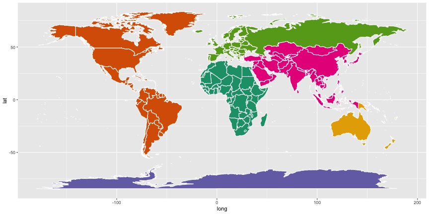
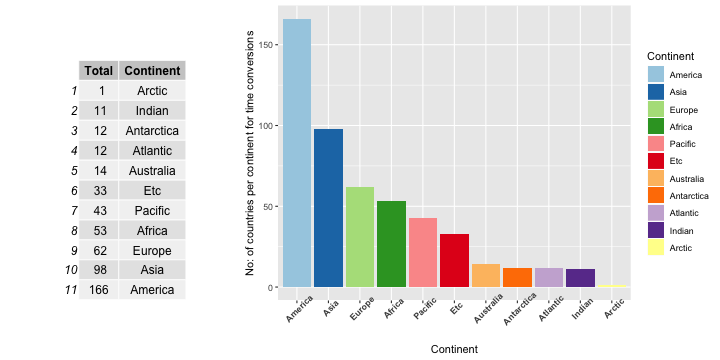

Data Science Specialization - JHU at Coursera
Author: Preethy Nair
library(RColorBrewer); library(countrycode); library(maps); library(gridExtra)
library(tidyverse); library(rworldmap); world_map <- map_data("world")
world_map$Continent <- countrycode( sourcevar = world_map$region,
origin = "country.name", destination = "continent" )
world_map$Continent[which(world_map$region == "Antarctica")] <- "Antarctica"
ggplot(world_map, aes(x = long, y = lat, group = group, fill = continent)) +
geom_polygon( fill = brewer.pal(n = 7, name = "Dark2")[as.numeric(as.factor(world_map$Continent))],
colour = "white")

Title panel: TitleNavigation bar: Navigation tabs for the (i) main application (ii) About page and (iii) Documentation pagetime zones & widgets for providing date and timeMain panel:
verbal statement for the time conversionAll the input widgets have been initialized with a starting value
Each session begins with the results for these initialized values displayed as output on the main panel.
This application is deployed on shinyapps.io server and the source code is freely available under MIT license from the GitHub
A detailed documentation for the application is available on GitHub pages.
timeZones <- readRDS("data/time_zones.RDS")
df <- data.frame(Total = do.call(rbind, lapply(timeZones, length)))
df$Continent <- rownames(df); rownames(df) <- NULL
df <- df %>% mutate(Continent = fct_reorder(Continent, desc(Total))) %>% arrange(Total)
tz_table <- tableGrob(df)
tz_plot <- ggplot(df, aes(x=Continent, y=Total, fill=Continent))+
geom_bar(stat = "identity")+ labs(y="No: of countries per continent for time conversions")+
theme(axis.text.x = element_text(angle=45, face="bold"))+ scale_fill_brewer(palette = "Paired")
grid.arrange(tz_table,tz_plot , ncol=2, widths=c(1,2))

{kind=link}